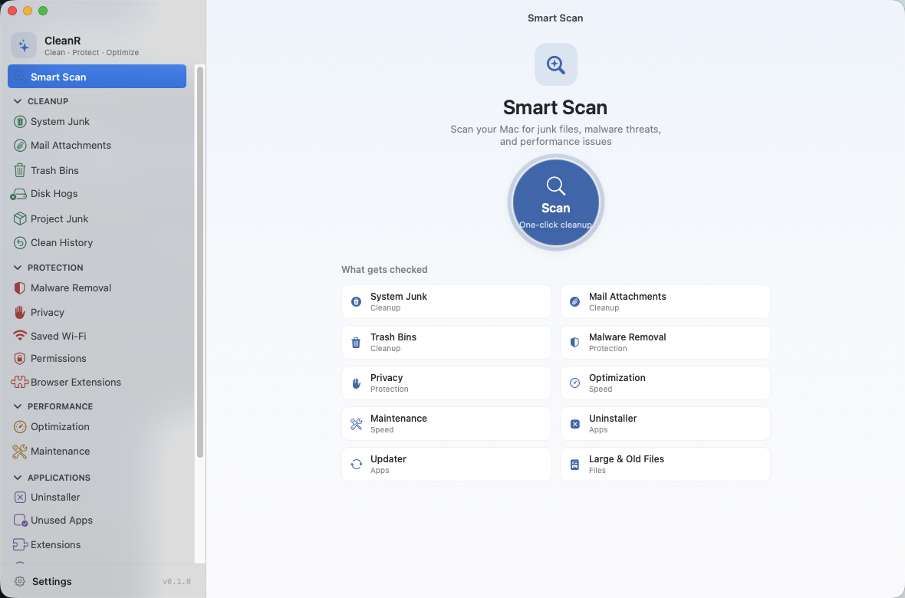
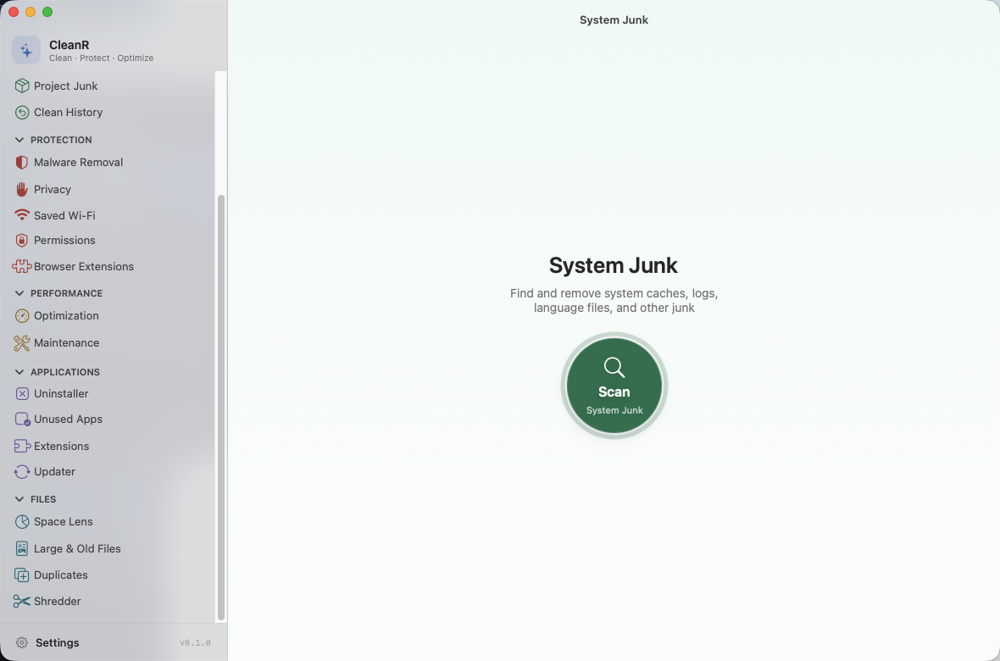
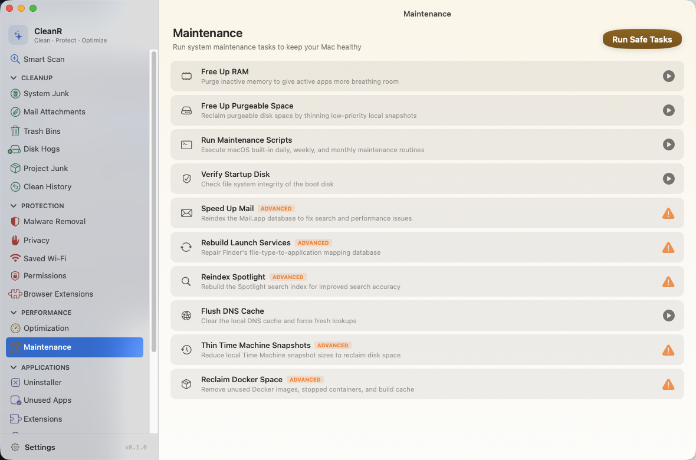
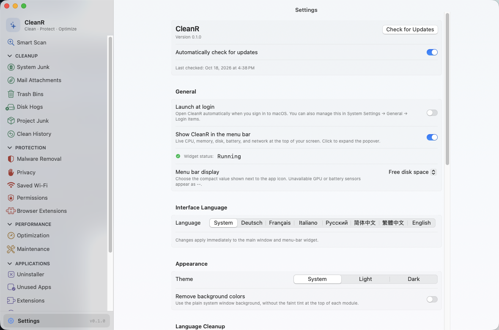

CleanR is the cleaner, optimizer, and malware scanner that does the whole job in the open — 22 modules, every deletion to the Trash first, and source you can inspect before you ever grant it access.
Free for personal use · Signed & notarized DMG · Trash-first safety model

One app instead of five utilities. Run Smart Scan for the whole sweep, or open a single module — each one reviews before it removes.
Smart Scan, System Junk, Mail Attachments, Trash Bins, Project Junk, Disk Hogs, Clean History. Sixteen-plus junk categories, developer build folders, Docker and simulator bloat — and every clean restorable in one click for 30 days.
Malware Removal, Privacy, Browser Extensions, Saved Wi-Fi, Permissions. Signature scanning at three depths, browser history and cookie cleanup (bookmarks untouched), and a by-app view of every privacy grant on your Mac.
Optimization and Maintenance. Login items and launch agents you can actually turn off, plus the built-in macOS upkeep tasks — with advanced tasks marked before they run.
Uninstaller, Unused Apps, Extensions, Updater. Remove apps with their leftovers across 17+ Library locations, reset an app to factory defaults, and keep everything current.
Space Lens, Large & Old Files, Duplicates, Shredder. A treemap of your whole disk, duplicate detection that can consolidate with APFS clones instead of deleting copies, and secure erasure when you mean it.
A calm, native interface — system materials, quiet color, and the module name always in view.



A cleaner gets deep access to your files. CleanR earns it: inspect the source on GitHub, watch every operation in the log, and undo a clean when you change your mind.
Homebrew, or the notarized DMG from GitHub Releases. Either way it just opens — no right-click dance, no Terminal.
brew tap coldrazer/cleanr && brew install --cask cleanr
Prefer a DMG? Download the latest release →